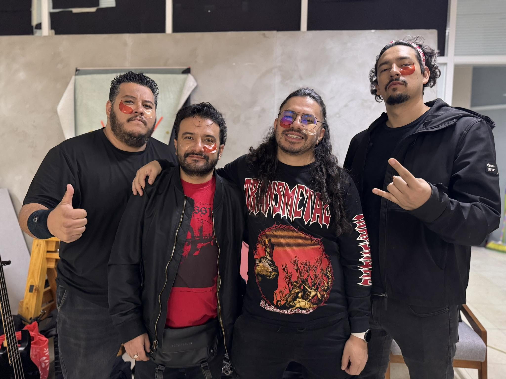

Hay canciones que se escuchan con los oídos y otras que se sienten directamente en el pecho. Lo nuevo de los mexicanos Asedio, titulado "Sed de Aniquilación", pertenece sin duda al segundo grupo. Más que un simple sencillo de thrash metal, este lanzamiento es una descarga de pura catarsis, un grito de guerra nacido desde las entrañas de Ecatepec que transforma el dolor, la rabia y la hostilidad del entorno en una obra de arte absolutamente demoledora.

EL LATIDO DE LA RESISTENCIA
Desde el primer segundo, el tema te atrapa por el cuello. Las guitarras no solo ejecutan riffs veloces; lloran y rugen al mismo tiempo, rescatando esa melancolía oscura del metal sueco para fusionarla con la agresividad del thrash latinoamericano. La batería golpea con la fuerza de un corazón acelerado por la adrenalina.
La interpretación vocal es el alma de la canción. Lejos de la frialdad técnica, la voz transmite una desesperación real, una urgencia que te obliga a prestar atención a cada palabra en español. Es la voz de quien ha visto el abismo y decide cantarle de frente, convirtiendo la frustración en un himno de resistencia y poder.
Los solos de guitarra, lejos de ser mero virtuosismo, se sienten como destellos de luz en medio de una tormenta, momentos de una belleza desgarradora que elevan la canción a un nivel espiritual.
Escucha "Sed de Aniquilación":